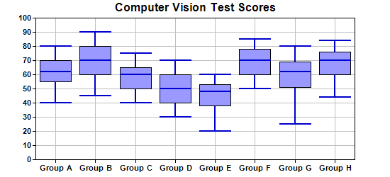

This example demonstrates creating a box-whisker chart.
A standard box-whisker chart plots up to 5 data sets using box-whisker symbols. The 5 data sets are sometimes called the maximum, 3rd quartile, median, 1st quartile and minimum, although they can represent any kind of quantities.
In a box-whisker symbol, the 3rd and 1st quartile values are represented as a box. The maximum, minimum and median values are represented as horizontal marks. There is a vertical line joining the maximum and minimum.
In ChartDirector,
XYChart.addBoxWhiskerLayer and
XYChart.addBoxWhiskerLayer2 may be used to create single-color and multi-color box-whisker layers.
When creating a box-whisker layer, not all 5 data sets need to be present. One common usage is to provide only the 3rd and 1st quartile data (leave other arguments as empty arrays) to draw only the "box" part of the chart. This will result in a floating box chart. Another common usage is to provide only the maximum and minimum values to draw only the "whisker" part of the chart. They are useful as "error symbols". (See
Line with Error Symbols for an example.) You may even provide only the median data to draw floating mark lines.
The following is the command line version of the code in "cppdemo/boxwhisker". The MFC version of the code is in "mfcdemo/mfcdemo". The Qt Widgets version of the code is in "qtdemo/qtdemo". The QML/Qt Quick version of the code is in "qmldemo/qmldemo".
#include "chartdir.h"
int main(int argc, char *argv[])
{
// Sample data for the Box-Whisker chart. Represents the minimum, 1st quartile, medium, 3rd
// quartile and maximum values of some quantities
double Q0Data[] = {40, 45, 40, 30, 20, 50, 25, 44};
const int Q0Data_size = (int)(sizeof(Q0Data)/sizeof(*Q0Data));
double Q1Data[] = {55, 60, 50, 40, 38, 60, 51, 60};
const int Q1Data_size = (int)(sizeof(Q1Data)/sizeof(*Q1Data));
double Q2Data[] = {62, 70, 60, 50, 48, 70, 62, 70};
const int Q2Data_size = (int)(sizeof(Q2Data)/sizeof(*Q2Data));
double Q3Data[] = {70, 80, 65, 60, 53, 78, 69, 76};
const int Q3Data_size = (int)(sizeof(Q3Data)/sizeof(*Q3Data));
double Q4Data[] = {80, 90, 75, 70, 60, 85, 80, 84};
const int Q4Data_size = (int)(sizeof(Q4Data)/sizeof(*Q4Data));
// The labels for the chart
const char* labels[] = {"Group A", "Group B", "Group C", "Group D", "Group E", "Group F",
"Group G", "Group H"};
const int labels_size = (int)(sizeof(labels)/sizeof(*labels));
// Create a XYChart object of size 550 x 250 pixels
XYChart* c = new XYChart(550, 250);
// Set the plotarea at (50, 25) and of size 450 x 200 pixels. Enable both horizontal and
// vertical grids by setting their colors to grey (0xc0c0c0)
c->setPlotArea(50, 25, 450, 200)->setGridColor(0xc0c0c0, 0xc0c0c0);
// Add a title to the chart
c->addTitle("Computer Vision Test Scores");
// Set the labels on the x axis and the font to Arial Bold
c->xAxis()->setLabels(StringArray(labels, labels_size))->setFontStyle("Arial Bold");
// Set the font for the y axis labels to Arial Bold
c->yAxis()->setLabelStyle("Arial Bold");
// Add a Box Whisker layer using light blue 0x9999ff as the fill color and blue (0xcc) as the
// line color. Set the line width to 2 pixels
c->addBoxWhiskerLayer(DoubleArray(Q3Data, Q3Data_size), DoubleArray(Q1Data, Q1Data_size),
DoubleArray(Q4Data, Q4Data_size), DoubleArray(Q0Data, Q0Data_size), DoubleArray(Q2Data,
Q2Data_size), 0x9999ff, 0x0000cc)->setLineWidth(2);
// Output the chart
c->makeChart("boxwhisker.png");
//free up resources
delete c;
return 0;
}
© 2023 Advanced Software Engineering Limited. All rights reserved.